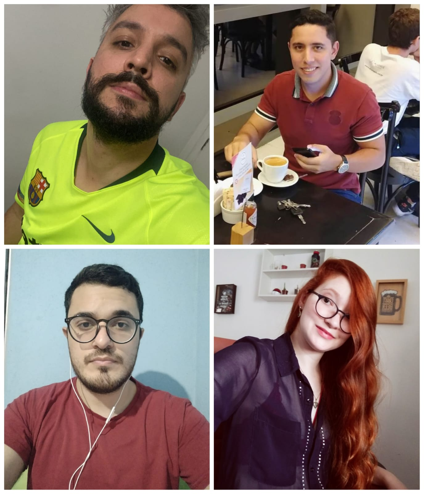
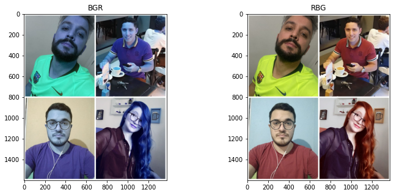
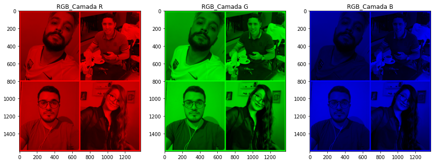
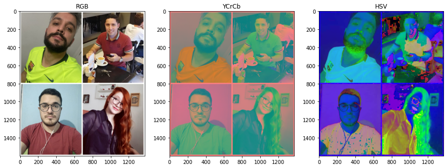
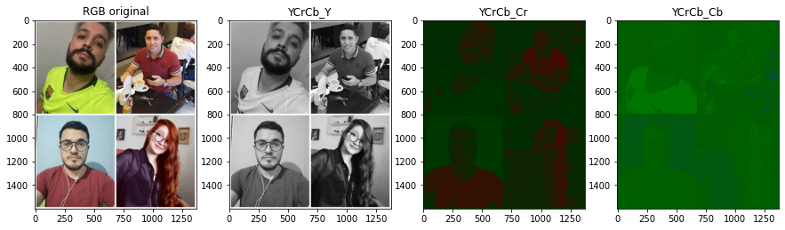
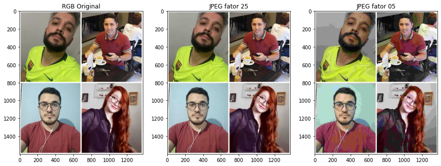
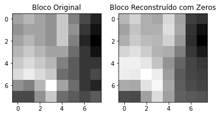
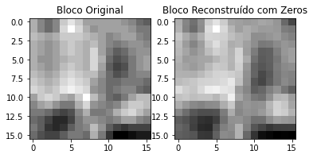

Parte 1 - Criação de um video de Animação
Nesta primeira etada do laboratório utilizamos o software Blender e criamos a animação abaixo.
Parte 2 - Alteração e Edição de imagens
Na segunda parte do laboratório, cada integrante do grupo enviou uma foto sua, utilizando roupas de cores diferentes para que alteracemos o espaço de cores das fotos e percebessemos este efeitos em diferentes cores.
Cada imagem foi apresentada em formatos BGR e RGB em camadas indivuais, e também YCrCb e HSV que por sua vez, possuem canais individuais. Abaixo segue as imagens originais comparados com a versão BGR.
E também segue a versão com as camadas individuais do RGB.
Abaixo temos as imagens YCrCb e também em HSV.
Realizamos o procedimento para os canais de YCrCb, e mostramos os resultados abaixo. Iniciando pela imagem YCrCB_Y, YCrCB_Cr e YCrCB_Cb.
Parte 3 - Comparação de imagens
Nesta parte do laboratório comprimimos as imagens dos integrantes do grupo, com qualidade diferentes (utilizamos os fatores 25 e 5) e realizamos as comparações das imagens.
Parte 4 - Compreenssão com DCT
Realizamos a compreensão DCT para a imagem 8x8 dos integrantes do grupo, conforme o exemplo utilizado.
Conforme orientado, realizamos a remoção de mais duas diagonais além das já removidas no exemplo, segue abaixo a imagem.
Escrever a conclusao.